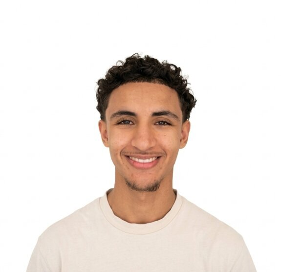

Actuellement en formation à l'IUT de Bordeaux (Gradignan), je recherche un stage de 8 à 10 semaines en informatique (développement web/logiciel, administration système & réseaux, bases de données), à partir du 18 Janvier 2027, dans la région de Bordeaux ou de Mont-de-Marsan. Rigoureux et polyvalent, je souhaite mettre mes compétences techniques au service d'une équipe dynamique.

Java (POO, JavaFX, JUnit, JGraphT), C#, C (système Unix), Python, Assembleur PowerPC.
HTML5, CSS3, JavaScript, PHP, SQL, PostgreSQL, MySQL, Oracle SQL, Pandas.
Scripting Bash / Shell, Linux (Debian/VM), Windows (PowerShell), SSH, HTTPS, Wireshark.
Git / GitHub / GitLab, Méthode Merise (MCD/MLD), UML, BPMN, Figma, Agile / Scrum.
Cliquez sur une image pour l'agrandir ou sur un projet pour consulter ses détails, l'organisation du travail et les compétences acquises.
Status
Arbitre officiel départemental (FFF / District de la Gironde)
Club couvert
FC BIGANOS
Niveau de matchs arbitrés
Championnats jeunes régionaux (assistant) et départementaux (central), et Coupe de Gironde/Aquitaine jeunes
Pratique du football et course à pied
Entretien de l'endurance, régularité sportive et goût de l'effort collectif.
Mécanique et entretien (automobile et trottinettes électriques)
Diagnostic de pannes, réglage et maintenance pratique au quotidien.
Jeux de réflexion et logique
Déduction, analyse d'indices et résolution de problèmes.
Disponible pour un entretien concernant un stage de 8 à 10 semaines, à partir du 18 Janvier 2027, dans le domaine de l'informatique, sur le secteur de Bordeaux ou de Mont-de-Marsan.